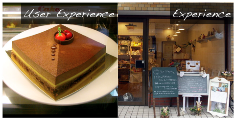
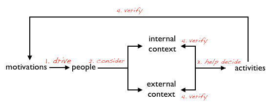

Experience和我们常说的User Experience是一回事吗？
就像上一次说的使用Design Thinking这样的设计方法时，与发生使用行为的过程相比较，我们更加关注对使用行为产生的上下文（内在的和外在的）。那么，从这个意义上来说，Experience和User Experience是两个概念。
User Experience 首先定义了“User”，但实际上，从“People”到“User”的过程是其内在和外在上下文共同作用，把潜在的驱动转化成实在的“使用行为”，这时候他才能被称之为“User”。如何通过更好的交互设计，使得“User”在进行实在的“使用行为”时，获得更好的“使用”体验，是User Experience需要解决的问题。
User Experience所不能解决的是，如何让潜在的使用者，变成真正的使用者。而当我们谈Expeirence时，我们讨论的是在整个从目标使用者到真实使用者的全过程，而不单单只谈论使用过程。
举个简单的例子：我要开一家点心店。那么User Experience指的是每块蛋糕真正送入到客人口中的口感，而Experience指的是从客人从拐入我家店面的巷口，远远看见手写的招牌，白色雕流苏的露天椅，安静纯美足够小清新的店员，民谣的音乐，各色的杯垫，甚至开放厨房冰箱上的磁贴，而味美的蛋糕只是整体体验中的一部分，很多情况下它很重要，但有时也不那么重要，所谓“为环境付费而不是其中的产品”。

所以说，User Experience不等同与Experience，很多情况下它是Experience中重要的一环，特别是对于软件开发来说。
开个小清新点心店我可以理解Experience的重要，那软件产品的Experience怎么设计呢？
确实，软件产品不同于其他商业模式，它无法产生切身的交互体验，或者这样说，享用蛋糕的时间也许只占到整体体验时间的1/8，但对于软件产品来说，使用体验占绝大部分时间。
尽管如此，软件产品从潜在使用者到真实使用者的过程中仍然有可以明确划分的阶段，而这个跟很多我们线下的行为模式（比如选择来我的点心店坐坐）类似：
驱动
我有一种潜在的信息需求，或者有一种麻烦，这使我考虑使用新的一种软件去获得信息或解决麻烦。就像我想找个点心店的驱动是肚子饿，或者弄点小浪漫；
发现
我开始选择一种方法去发现可能存在的软件，主动或者被动，往往主动的效果更好，被动的往往是要充分激发我的驱动才能行。就像街角那个浪漫的手绘粉彩招牌；
调查
我开始对可能存在的选择进行调查，看看软件介绍或者大家的使用反应。就像我会把脑袋伸进店里看看里面有没有客人，他们的打扮是不是跟我类似；
判断
我收集到足够的关键信息，比如说是不是免费，是不是需要注册等，这让我决定尝试一下。就像我看了看店前菜单上的价格想是不是可以考虑进去试试；
尝试
我试着尝试了一下，或者真的注册了，或者下载了个试用版本，这个阶段我还在并没有完全成为真正使用者，只是尝试。就像我先点了个最受欢迎的点心尝尝看；
验证
在尝试过程中，我在不断验证它是否已经或者可能未来满足我的驱动，同时验证它也不会对我内在上下文（我很讨厌copycat，很讨厌收费，很讨厌腾讯）和外在上下文（这风格像是90后用的，我用会不会有点丢脸）造成影响，这个验证过程会让我下定决心成为真正的使用者，或者不。
就像那银匙入口的第一次，反复品味后，靠在舒服的沙发上看看窗台上阳光照出漆木的纹理，想想人家知道我来这种小资的地方会不会笑话我，因为我的圈子都是苦闷的堆代码的，想想要不要再来点，或者以后常来；
使用
如果软件真能满足我的驱动，又不和我内在外在上下文产生冲突，那么好吧，我会使用这款产品，为什么不呢？就像我第二次来到点心店，还带着朋友和书；
在这些阶段之后，我们再来谈User Experience。
于是软件产品Expeirence的设计过程，除了最后的User Experience，还包括对于上述每个阶段的具体分析和针对性设计。这些针对性的设计和讨论，最后或多或少都会影响到User Experience上。
等等，你老说潜在使用者和真实使用者，区别是什么？
“潜在使用者”是指那些目标用户群体中可能在未来使用我们产品的人，他们有可能通过主动要求或被动激发，产生符合我们产品设计定义的“驱动”。
“真实使用者”是那些真正依赖于我们的产品，在较长一段时间内使用我们产品，并可能为我们产品产生经济利润的那些人。在“潜在使用者”和“真实使用者”之间还有一些试用的人群，他们依旧在这里被定位成“潜在使用者”。
这样我清楚多了。看来每个阶段都要进行分析和设计，那可不可以分别介绍一些分析方法？
这些阶段有时候并不是区分清楚的，不同的产品策略也许有不同的情况。但是从广义上讲，从“潜在使用者”到“真实使用者”的过程，可以抽象成为下面这个过程：

- 某种驱动驱使“潜在使用者”；
- “潜在使用者”考虑产生使用行为对内在和外在上下文产生的影响；
- 对上下文的考虑帮助“潜在使用者”做出尝试的行为；
- 尝试行为的结果会被用来验证──第一，驱动是否满足；第二，是否影响内在或外在上下文
当经过这四个过程，最终使得“潜在使用者”变为真正具有用户粘性的“真实使用者”。
Experience Design中的各种实践，从很大程度上来说，都是围绕在上述的四个过程中来的，当然也包括最后的交互设计。
比如我们通过Customer Journey Map来研究整个“潜在使用者”到“真实使用者”的全过程；比如我们通过Mood Line或者Touch Points来找到这个过程中可以产生改进的地方；比如我们用Empathy和User Profile的方法研究用户外在和内在的上下文；比如我们使用Reverse Engineering的方式从已知的信息中倒推出用户的驱动，以及产生这种驱动的条件；比如我们用Sketchboard的形式快速画出用户整体体验中我们认为最重要的交互，等等。
这里将涵盖很多Design Thinking的实践，此处不详细介绍各种具体方法，在未来的文章中，我会一一介绍。
看来是有很多方法支持Experience的设计过程的，它本身于User Experience Design并不矛盾，只是更好的扩充和指引。那么现在它引起足够人重视吗？
我认为其实很多人一直在从事这样的工作，只是没有把它用这样一个名字包装起来。现在的软件越来越趋向于服务化，而不单单只是产品的概念。因为技术的不断成熟，软件产品本身的差异性已经不大（有那么多的copycat，你能区分kaixin和renren，以及各种微博的区别吗？），在这样的背景下，自然就要出现“打服务牌”的现象。
互联网之外的传统行业出现的事情也没有什么理由不在软件也出现──更准的消费人群定位，不单单是符合消费者的使用习惯(how to use)，也充分考虑到他们的潜在诉求(why to use)、使用软件的环境因素(where to use, when to use)。这也就是为什么Experience Design的理念也被广泛运用于Service Design的实践当中，Design Thinking的概念也对Service Design有深远影响。
上月初，著名的Adaptive Path在三番举办了MX2011大会，请留意本次大会的广告语：Managing Experience Across the Web & Beyond. 这个广告语的强烈信号是，软件已经越来越具备淡化其电子化的特性，慢慢融合到更广泛的商业形态当中去了，软件设计方法可以与线下商业模式设计分享心得和方法论。
在这次大会上，值得注意的是来自Forrester的Paul Hagen，他所带来的讲演是关于在各个领域里Chief Customer Officer的崛起。
其中提到的很多客户体验的东西完全可以与软件开发的理念融合，比如Customer Experience Index(CxPi)提到的三个层级：Useful - experience offers value, Usable - easy to access that value, Enjoyable - emotional engaging experience。这与交互设计中的理论完全相同。
同时，他揭示了越来越多的企业（更多的IT企业）正在投入更多的力量在对他们目标消费者的研究，采用更多具有Design Thinking理念的设计方法，推出更多Enjoyable的产品。
从这一点来看，软件产品服务化是大势所趋，未来会有越来越多的IT企业把产品当成他们整体服务策略的一环，通过各种产品完善对于目标消费人群整体体验的设计，而不单单只是产品设计。
我觉得我们可以从具体的一些实践开始一些更深入的讨论？
关于具体的实践，下一篇我们会讲讲Design Thinking相当重要的设计理念──Empathy移情。